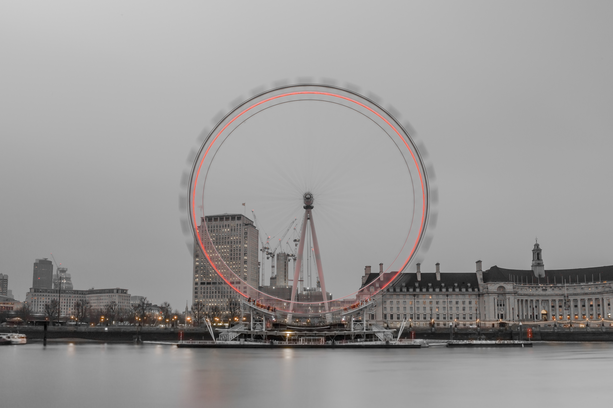

Palace of Westminster/Big Ben
Omstreeks 1840 werd het enorme gebouw aangepast en verbouwd tot wat
het vandaag is. Sinds het bestaan van dit paleiselijke oord heeft het
gediend als zetel van het parlement. Hiervandaan wordt het Verenigd
Koninkrijk aangestuurd. Er zijn meer dan 1100 honderd kamers en
duizenden traptreden te tellen. Het meest beroemde deel is de
klokkentoren die de naam Elizabeth Tower draagt. De grootste van de
vijf klokken in de klokkentoren is de Big Ben. Als luidklok doet Big Ben alleen dienst in bijzondere situaties, zoals de uitvaart van een monarch, wanneer de klok het aantal levensjaren van de overledene slaat.
Dit gebeurde voor het laatst in 1952, toen Big Ben 56 slagen liet horen voor koning George VI.
Sindsdien heeft Big Ben alleen geluid op 27 juli 2012, ter inleiding van de Olympische Zomerspelen die dat jaar in Londen gehouden werden.
Na de veertig slagen van Big Ben vielen de Londense kerkklokken in om tien minuten lang te luiden.
Tower Bridge
De meest beroemde brug over de rivier de Theems is toch wel de 244
meter lange Tower Bridge van Londen. Vooral in de avond als de lichten
aan gaan is het een plaatje om te zien. Het is tevens een zeer
belangrijke brug, aangezien er elke dag ongeveer veertig duizend mensen
passeren. De brug kan worden geopend om schepen toegang te bieden. Dit
gebeurt ongeveer 900 keer per jaar.Het oorspronkelijk mechaniek voor het openen en sluiten van de brug was hydraulisch; de benodigde waterdruk werd geleverd door stoommachines.
Tegenwoordig wordt de brug elektrisch geopend. De originele stoommachines zijn echter bewaard als toeristische attractie.
Londen Eye
Sinds de opening in 1999 wordt de Londen Eye goed bezocht. Met een
hoogte van 135 meter biedt dit reuzenrad je een spectaculair uitzicht
over de stad Londen en zijn bezienswaardigheden. De Londen Eye ligt
aan de zuidelijke oever van Theems vlakbij Waterloo Station en het
London Sea Life Aquarium. De cabines zijn dicht en rondom van glas
zodat haast iedere uithoek van de stad te zien is.
London Eye werd gebouwd in 1998 en was bij de opening het grootste reuzenrad ter wereld.
Inmiddels hebben enkele andere reuzenraden London Eye al overtroffen in hoogte. Anno 2013 is de Singapore Flyer met een hoogte van 165 meter recordhouder.
Sinds maart 2014 is de High Roller in Las Vegas (Nevada) het hoogste reuzenrad (167.6 meter).

Cr: www.londenvoorbeginners.nl